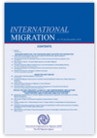

收录于合集

简 介
【文章原题】 Navigating Peace and Security: Women and Social Capital in Iraq
【作者简介】 杰奎琳·帕里（Jacqueline Parry），伊拉克美国大学（American University of Iraq）；Olga Aymerich，国际移民组织（International Organization for Migration, Iraq）。
【文章来源】 International Migration，27 June 2018.

【期刊介绍】 国际移民（International Migration）是一个关于移民问题的评论性政策导向期刊，由世界各地的人口统计学家，经济学家，社会学家，政治学家和其他社会科学家进行分析。它涵盖了国际移徙中与政策相关的整个领域，不仅关注反映政策问题的广泛议题，而且还关注世界所有区域的覆盖面和比较政策。
** 【编译】** 李甜
核 心 观 点
作者以迪亚拉为案例研究，妇女参与和平与安全机制的一个关键决定因素是能够与核心家庭以外的人联系。这些联系被称为社会资本即社会中人们之间的关系网络，使社会能够有效运作。一般而言，社会资本被理解为包括三个要素：信任，允许互助和信息交换；网络，提供对资源的访问；规范，决定哪种行为被认为是正确或正确的。
** ** ** ** 摘要********
本文探讨了国际，国家和地方对妇女参与和平与安全进程的解释。2000年，国际社会正式认识到妇女通过联合国安理会第1325号决议（联合国安理会第1325号决议）平等参与维护和促进和平与安全的重要性。各国政府随后颁布了国家行动计划，以实现联合国安理会第1325号决议的目标，包括2014年在伊拉克建立的目标。伊拉克的国家行动计划优先考虑法律和政治机构的改革，本文试图了解这种做法是否与伊拉克妇女产生共鸣。
简介：伊拉克 和平 与 安全中的 妇女
**
**
不安全感对男性和女性的影响不同。风险的类型，个人或群体的需求以及参与决策的能力都根据社会文化的性别角色而有所不同，因此，妇女，男子，女孩和男孩面临着不同的安全威胁诉诸司法的障碍不同。在大多数国家，不平等的权力关系导致妇女被排除在权力职位之外，并且男性占据主导地位。反过来，男性主导的机构不太可能反映女性的利益和观点，实际上可能会重现和加强她们在社会中的边缘化地位。
认识到这种差异，二十年来，全球北方和南方的妇女组织主张妇女平等参与和平与安全进程。2000年10月31日，联合国安理会通过了第1325号决议，肯定妇女平等参与和充分参与维护和促进和平与安全的重要性，以及需要加强她们在预防和解决冲突方面的决策中的作用。为了落实联合国安理会第1325号决议的承诺，各国政府制定了国家行动计划，为政府和民间社会制定了详细的路线图。
不幸的是，排斥和暴力是许多伊拉克妇女的共同经历。伊朗- 伊拉克战争，伊拉克1990年入侵科威特，1991年海湾战争以及整个1990年代的国际制裁都对整个社会和妇女产生了毁灭性的影响。2003年入侵后，伊拉克妇女的境况恶化，现在许多妇女被限制参与社会。
伊拉克的国家行动计划承认，尽管伊拉克妇女在冲突期间作出有益贡献，但她们没有在与立法，行政和司法领域有关的决策机构中获得平等代表权。为了解决这个问题，伊拉克联邦政府和库尔德斯坦地区政府共同制定了一项国家行动计划，倡导一个五年路线图，包括国家层面的政治改革，选举改革，法律改革以及改善妇女权利组织与政府机构之间的沟通网络。
伊拉克国家行动计划预期加强妇女参与和平与安全的主要机制是体制改革。这表明了一种自由建设和平模式：集中于个人的言论和结社自由，法治，主要市场经济和多党自由选举中选出的政府。这种模式经常被批评为自上而下，精英驱动的过程，未能解决女性被排斥的根本原因，如缺乏经济资源，教育限制或保守的社会规范。本文试图了解“国家行动计划”所倡导的自由主义建设和平模式及其对体制改革的重视是否与伊拉克妇女产生共鸣; 如果没有，可以采取哪些措施来减少存在的“严重差距”。
整合 EMIC和ETIC的观点
**
**
在方法论上， Emic视角代表参与者的天生文化观，原则上是他们的价值观和信仰，而Etic视角代表外部研究者，并且根据现有的概念方案表达分析。由于我们研究的目的是了解迪亚拉的伊拉克妇女的观点，我们对数据的解释建立在emic观点之上。
在政策和学术界，女性往往被描绘成一个同质的群体，尽管她们的经历在时间，文化，阶级，种族，民族和年龄方面各不相同。为了对抗这种同质化趋势并引出生活在不同环境中的女性的观点，我们确定了迪亚拉北部的四个社区，虽然彼此相距不到一小时，但在人口，社会，经济和政治构成方面存在差异。其中一个社区位于该区的中心，具有强烈的城市特色，而其他三个社区具有混合或乡村特征。两个社区被伊斯兰国占领，并且受到广泛流离失所的影响，而另外两个社区不是伊斯兰国的目标，而收容了大量国内流离失所者。
从研究开始，我们与“文化内部人士”的研究助理合作，每个研究助理都住在迪亚拉北部，用当地语言（库尔德语或阿拉伯语）讲话。研究助理为作者提供了采访语言的单据，我们随后将其翻译成英语。
从2017年2月至6月，研究助理共完成了40次深度访谈和12次焦点小组讨论，四个社区之间平均分配。因此，在每个社区进行了十次深入访谈：七名女性受访者和三名男性受访者。每次访谈都在私人环境中进行，没有其他家庭成员在场。这个过程使我们能够反思地理解经验材料中出现的概念，并综合了emic和etic的观点。
迪亚拉 的安全与和平 中的 女性 ：女性 对安全的看法
**
**
迪亚拉是伊拉克较不安全的省份之一。在 2017年的一项研究中，国际移民组织报告称，50％的人口“有时”受到犯罪的影响，20％的人受到“有时”恐怖袭击和绑架的影响。同年，巴林中心发现生活在迪亚拉的三分之二人感到不安全。男性和女性不安全感的主要原因是存在非正规武装团体（40％）和缺乏社区凝聚力（18.5％）。
在我们的实地考察期间，当被要求从描述符列表中进行选择时，几乎所有受访者都选择“我的区域安全但不稳定：安全事件很少见，但人与人之间存在紧张关系。”当被问及一个悬而未决的问题：“什么是妇女和女孩的主要安全问题？“少数妇女描述了与人身安全有关的风险，例如绑架，谋杀和抢劫的风险，而其他妇女则报告了近亲的家庭暴力风险。然而，更常见的是，妇女声称她们的主要不安全因素是他们被排除在公共场所和决策之外。一名女性受访者解释说，妇女面临着不安全感，因为“我们被排除在社会，经济和政治权威之外”，而另一位女性则注意到“妇女和女孩害怕在社会中被忽视”，而另一位女性则担心“妇女对未来的恐惧，因为我们被剥夺了社会和社会的合法地位，没人能保证我们的权利。”
女性受访者还概述了他们被限制进入公共场所（如街道，市场，学校或休闲场所）所产生的一系列安全风险。一名女性受访者解释说，“妇女被限制获取所有资源，因为她们不被允许工作”，而另一名女性则解释说妇女不能从事经济活动，例如购买或出售商品。一些受访者还强调了受教育机会有限的风险：“这里的人不相信女性应该学习如何阅读或写作，他们认为，如果妇女和女孩接受教育，那么她们将在社区中发挥作用，而她们无权;“反过来，这种缺乏教育”限制了妇女参与政策制定和决策。“女性提出的最后一个安全问题是他们的孤立：一个人指出：“女性做的事情并不多，我们不能出去社交，所以人们被隔离了。” 这对女性造成了严重影响，并且给她们带来了心理压力。
一些女性受访者表示，将妇女排除在公共场所之外是教派紧张局势，不安全感和犯罪率增加的结果。然而，大多数人都指责社会规范。来自所有四个社区的女性受访者都解释说，“独自外出的女性受到骚扰”。一名受访者解释说，她所在地区的女性“甚至不能去购物，因为她们害怕人们的负面言论和暗示”。这种骚扰的最终结果是使妇女“远离社会，经济和政治权力中心。”
妇女参与和平与安全
**
**
妇女在正式政治机制中的代表性在四个地方各不相同。在地区中心，妇女的人数众多且角色各不相同：受访者可以在地方，地区和省一级，司法部门和警察部门中找到女性代表。在其他三个地方，妇女不了解其治理机构中的任何女性代表，地方理事会，警察部队和法院都由男性组成。妇女确实参与了伊拉克联邦政府和库尔德地区政府发起的和解进程。在所有地区，受访者都可以回忆起在伊斯兰国之后就和解和财产补偿问题进行讨论的社区领导人或政府官员邀请了妇女，但唯一参加的妇女是那些受过高等教育或具有专业职位的妇女，如教师或代表民间社会。女性受访者一致同意妇女应参与社区有关和平与安全的决定。一个共同的理由源于他们在家庭中的作用：妇女“对新生代负责”，因此应该“在维持和平与安全方面发挥重要作用，因为妇女是家庭和社会中和平的教育者。
使用中介
**
**
在这种情况下，当面临争议或希望参与有关安全的事项时，妇女很少接触当局。妇女以不同的方式解释了他们的犹豫：一些人强调“社区传统不允许妇女离开家园”，而其他人则解释说，“女性因为这些当局中没有女性而只有男性而感到害羞。”“妇女感到羞于单独向当局说话，因为她们非常关心她们的声誉”。另一位解释说女性不愿单独接触当局，因为可能会发生重大的社会骚扰，也因为她们缺乏自信，他们觉得自己无法解决当局提出的问题。
由于妇女无法直接进入当局，她们往往依靠中间人代表他们。中间人也称为经纪人。中间人通常是女方的丈夫或男性亲属。然而，非相关人物也充当中间人，最常见的是社区领袖，或者在部落权威强大的地区，是酋长（部落首领）。在某些情况下，社区领袖或酋长的妻子也作为中间人参与其中。
一位非政府组织的工作人员说：“妇女不直接去法院或警方，因为她们不信任他们。我们的非政府组织与女性建立了信任，因为我们都是团队中中的女性，而且我们保密度非常高，即使在案件工作者之间，他们也不允许共享信息。这非常重要，女性相信我们会保密信息，这样他们就不会害怕失去声誉。”
访谈中出现了依赖中介的四个例外情况：
如果权威人物是女性，那么女性就没有必要依赖中间人。居住在区中心的所有女性受访者，女警官表示她们会直接向警方报案。此外，在所有四个地点，大多数女性受访者（24人中有22人）表示，如果有一个由女警官组成的妇女警察部队，她们将直接向警察报告问题。
依赖中介的第二个例外是“有能力说话的女性”。受过良好教育的女性，具有专业角色的女性，以及那些具有“高级别”的女性。正如一位受访者解释的那样，“这里有强大且受过良好教育的女性，她们能够管理与当局的问题，并可以发挥积极作用。
当保护一个人利益的过程明确，并且公开规则时，出现了第三个例外。这就是财产归还的情况，这一过程涉及根据一系列公开规则向政府和法院请愿的标准化方法。29名受访者中有24名表示，女性在提出财产赔偿要求时不会遇到障碍，即使她们自己行事中没有中介。
最后，11名女性受访者中有5名表示不会单独与当局联系，如果事情紧急且没有中间人，则确实例外。在社区看来，人们通常认为“如果妇女面临重要或紧急问题，她们可以直接与当局联系。”
社会资本的角色
**
**
在迪亚拉案例研究中，妇女参与和平与安全机制的一个关键决定因素是能够与核心家庭以外的人联系。这些联系被称为社会资本：社会中人们之间的关系网络，使社会能够有效运作 。一般而言，社会资本被理解为包括三个要素：信任，允许互助和信息交换；网络，提供对资源的访问；规范，决定哪种行为被认为是正确或正确的。
在迪亚拉，信任是妇女获得社会资本的关键决定因素。网络还在使妇女解决争端和获得和平与安全机制方面发挥了关键作用。三种类型的网络通常与社会资本相关联：粘合，桥接和连接。粘合社会资本是指同一群体（如家庭）或具有相似背景的一群女性之间的联系。弥合社会资本是指不同群体之间的联系，例如不同年龄或种族背景的妇女。连接社会资本将人们垂直地连接到具有不同经济或社会地位的群体，例如社区成员和地方当局之间。
社会规范。妇女不应该旅行或接触男人的集体理解限制了她们进入当局，并使妇女依赖中间人。与此同时，妇女恢复社会规范，为其政治和社会参与辩护，阐明了一种政治的母性概念，承认妇女在教育儿童成为“和平一代”方面的作用，这是一项要求妇女参与和平事务的责任。
这些因素共同意味着社会资本可以促进被限制的妇女获得和平与安全机制的机会。那些关系超越核心家庭的妇女能够获得桥接和连接社会资本，从而可以获得更广泛的中间人网络，这些中间人可以促进他们获得和平与安全机制；相反，拥有较少关系或较小网络的妇女获得和平与安全机制的机会更为有限。还有一些人发现，家庭或社交网络中的人所持有的社会规范限制了他们在家庭之外建立关系，接触中间人和接触当局的能力。这反映了这样一个事实，即社会资本既不具有本质上的好处，也不具有本质上的不良：它可以促进合作并加强对知识或支持的获取;但是，同样地，它可能以结果有害的方式运作。同样，虽然中介可能会增加受益人的能力，但也可能导致依赖和剥削特别是因为每个中间人都有自己的目标和利益。
缩小国际，国家和地方进程之间的差距
**
**
本文试图追踪国际，国家和地方对妇女参与和平与安全进程的一些重要区别。伊拉克的国家行动计划通过自由主义的建设和平范式解释了联合国安理会第 1325号决议，倡导法律，政治和官僚改革。迄今为止，国家行动计划的最重要成就已在国家层面实现，保证议会席位中的妇女和地方议会等其他民选机构的配额达到25％。尽管这些成就具有重要意义，但案例研究确定了促进妇女参与和平与安全进程所需的更广泛的变革。
关于妇女参与和平与安全机制的一个主要观点将重点从法律和制度转移到关系和社会规范。对于生活在迪亚拉北部的妇女来说，她们获得当局，法院和争议解决的机会取决于他们自己的社交网络，他们对可信赖的中间人的接触以及中间人所扮演的角色。这种观点强调了妇女进入权力场所的复杂性。改变法律或制定政治配额本身并不具备权力，而是依赖于妇女进入当局和机构的实际途径。一个专注的视角表明创造空间，机构和关系，建立和维护妇女的信任的重要性;努力使妇女可获得的经纪选择多样化，以便她们能够进入更广泛的中间人群;对中间人的作用以及个别中间人如何抑制或加强妇女获得和平与安全机制的机会进行批判性理解;并与女性合作，促进挑战限制性社会的叙事规范。
点击左下角“ 阅读原文 ”获取原文pdf版
声明
此文为国政学人微信公众平台外文编译系列文章之一，由国政学人编辑首发，不代表本平台观点。欢迎转发分享，未经授权谢绝转载。如有问题，请联系guozhengxueren@163.com
更多阅读
国政学人 （ID：guozhengxueren)
为方便学人及时阅读高质量文章
别忘把国政学人设置 星标 哦~